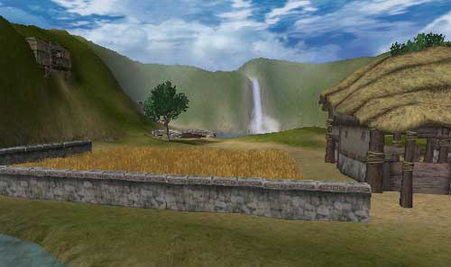
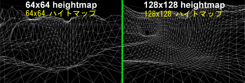
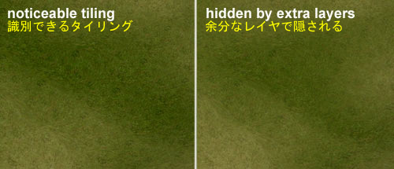
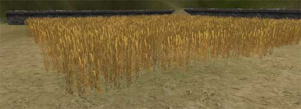
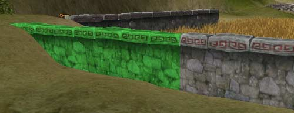
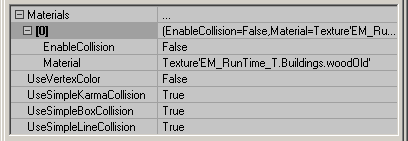

UDN
Search public documentation:
RuntimeMapProcessJP
English Translation
Interested in the Unreal Engine?
Visit the Unreal Technology site.
Looking for jobs and company info?
Check out the Epic games site.
Questions about support via UDN?
Contact the UDN Staff
Interested in the Unreal Engine?
Visit the Unreal Technology site.
Looking for jobs and company info?
Check out the Epic games site.
Questions about support via UDN?
Contact the UDN Staff
ランタイム マップ プロセス
ドキュメントの概要: EM_RunTime マップの機能を作成するプロセスを詳しく説明。 ドキュメントの変更ログ録: 最終更新 Jason Lentz (Main.DemiurgeStudios)、新規作成。原作： Jason Lentz (Main.DemiurgeStudios)。
はじめに
本書では、EM_RunTime マップの作成プロセスと、マップを選択する際の背景となる推論を説明します。本書では特にStaticMesh(静的メッシュ)、数種類の水の作成、テレインのセットアップについて詳しく解説します。Unreal Engineがはじめての方や、ちょっと他人の考え方を覗いてみたい方にはこの章は勉強になるはずです。 ランタイムビルドやマップをダウンロードするには以下のリンクをクリックしてください。 http://udn.epicgames.com/pub/Powered/UnrealEngine2Runtime/EM_RunTime マップの目的
まず最初に、EM_RunTime マップは、ゲームに詳しくない人および/またはエンジンでどんなことができるか興味のある人に、Unreal Engine で(特にランタイムビルドを使用して)実現できることをデモするためのものであることを理解してください。 EM_RunTime マップには、いろんな用途に使用できる様々な効果や要素が含まれています。別々の要素を組み合わせて使う方法については、「分離の例」を参照してください。テレイン
解像度の変更
EM_RunTime マップで最初にしなければならないことのひとつがテレインのセットアップです。ほとんどすべての視点からテレインの大部分が見えるように、最初は低解像度 (64x64) のテレインを使用します。その後、64x64 のテレインでは解像度が低すぎる場合、高解像度に切り換えます。以下で解像度変更前のテレインと変更後のテレインを見比べてください。
多くのテレインは既に大まかにレイアウトされているため、最初からやり直すに訳には行きません。その代わり「UnrealEd3 G16 ファイル エディタ」(Martin Bell 作成)を使用して、TerrainHeightMap(テレインのハイトマップ)の解像度を倍にしてから、再度インポートすると、TerrainInfo で拡縮され、Unreal Edのテレイン エディタを使用して滑らかな線にされます。 このツールは Martin Bell のサイト: http://homepage.ntlworld.com/martingbell/ut2003/ からダウンロードできます。
このツールは Martin Bell のサイト: http://homepage.ntlworld.com/martingbell/ut2003/ からダウンロードできます。
テレインで視野を制限する
前述のように、テレインの解像度が上がると、テレインの領域ごとにより多くの三角形が使用されます。この変更により、三角形の数が実質的には４倍になったため、以前のように多くのテレインはもう受け付けられなくなります。よって表示されるテレインの数は減り、広く開いた地形からテレインのファーム領域を分割するため、テレインの中に盛り上がりができます。そして、盛り上がりに隠れたテレイン部分がレンダラーに書かれるのではなく、確実に正しくふさがれるように、その盛り上がりの下にアンチポータルが追加されます。 上図ではテレインの下のオレンジの枠線のボックスにAntiportal(アンチポータル)があります。そのボックスに完全に塞がれたものはすべて隠されます。
上図ではテレインの下のオレンジの枠線のボックスにAntiportal(アンチポータル)があります。そのボックスに完全に塞がれたものはすべて隠されます。
テクスチャのタイルを非表示にする
ダウンロードサイズを最小にするため、通常テレインのテクスチャのサイズも標準的なゲームに使用するサイズより小さくされています。ただしどの解像度を選択しても、テレインを超えてイメージの縮尺と目に見えるタイリングとのバランスの問題は常にあります。EM_RunTime マップでビューアの足元がきれいに見えるように、適切な縮尺でテレインテクスチャをセットアップしてから、テレインのレイヤーを追加しタイルを調和すると、ちょうど良いバランスになります。
目に見えるタイリングを軽減するには、以下の２つの技法があります。- まったく別のテクスチャを別々の透明度で重ねる。
- 同じテクスチャを重ねるが、別々の透明度で回転、拡縮する。
静的メッシュのガイドライン
使用するマテリアルの数を決めるメッシュや、メッシュに振り分けるテクスチャ メモリを決めるメッシュ、三角形の数、起こりうる衝突の種類、または、他のレベルとの作用などを決めるメッシュを作成する場合、考慮すべき点がいくつかあります。自分のレベルに静的メッシュを作成する時のガイドラインを以下に示します。 StaticMesh(静的メッシュ)の詳細は、「静的メッシュのチュートリアル」を参照してください。サイズについて
StaticMeshを作成する際、パフォーマンスの点から多くのことを考慮する必要があります。これらの点は往々にして使用するプラットフォーム (X Box、プレイステーション、PC) に影響されるます。EM_RunTime マップは PC プラットフォームで実行するように設計されています。ただし、ほとんどの場合、EM_RunTime マップで考慮されている点は他のプラットフォームでも適用されています。 まず最初に、メッシュのサイズを寸法ではなく、三角形の数で考えなくてはなりません。ほとんどの場合より小さいほうが良いとされます。メッシュあたりの三角形の数が少なくなり、レンダリングも速くなりますが、、小さなメッシュを数個持つより大きなメッシュ１つにした方が良い場合もあります。麦畑などが良い例です。
この麦畑は小さなStaticMeshをいくつかコピーして並べて作成することもできますが、そうすると全体を1つのメッシュで表したときよりレンダリングが遅くなります。これは各メッシュのレンダリングにオーバーヘッドがあるためです。よって、シーンがまったく同じように見えても、麦畑は多数の小さなメッシュで構成するより、大きなメッシュ 1 つで構成する方がレンダリングが大幅に速くなります。 一般に、三角形が 1,000 - 2,000 個程度のStaticMeshが理想的とされていますが、これは単に大まかな経験値にすぎず、実際に使用するメッシュの最適なサイズは、プログラマとシーンを分析した上で状況に応じて判断する必要が有ります。モジュラー デザイン
EM_RunTime マップでは様々な StaticMeshを使っているわけではなく、ほとんどのメッシュは単一の用途のカスタム メッシュです。したがって、モジュラーデザインが必ず必要なわけではありません。例として石垣のメッシュを見てみましょう。
石垣の各セクションは 512 ユニット長で、横にシームレスな列として設計されています。2 の大きな倍数(128、256、512など) を使用すると、レベル デザイナーの作業をを非常に単純化できます。StaticMeshが、グリッドに完璧にスナップできるようにワールド ジオメトリを置き、モジュラーデザインを意識してビルドした他のメッシュと一列に並ぶように配置できます。 このタイプのモジュラーデザインは EM_RunTime マップのBSP sectionでも使用されます。モジュラー レベル デザインの原理について詳しくは、WorkflowAndModularity(ワークフローとモジュラリティー)を参照してください。衝突
StaticMeshのレンダリングは他のジオメトリタイプより速いのですが、欠点もあります－それは、衝突の計算でプロセッサに負担がかかることです。もちろん、StaticMeshの衝突を単純化する方法はあります。EM_RunTimeマップでは、すべてのStaticMeshに単純化した衝突外殻（Hull:詳細はImportingKarmaActors(カーマアクタのインポート)で説明)が与えられています。ASE をインポートするときにすべての衝突プロパティが以下のように設定されているか確認します。
これによって、通常非常に複雑な、StaticMeshのジオメトリでのアクタの衝突はなくなります。その代わり、ユーザーがサードパーティーのモデルプログラムで作成した単純な衝突外殻(hull)が増えます。この方法のもうひとつの利点は、衝突の計算が単純になるだけでなく、衝突のデータがメッシュに保存されるため、StaticMesh パッケージのファイルサイズが小さくなります。 衝突を単純化するもうひとつの方法は、衝突を避けたい場合、アクタの衝突をすべてオフにすることです。たとえば、湖の表面に使用しているメッシュは、この方法ですべての衝突をオフにしています。 また、DecoLayer(装飾レイヤー)で使用しているStaticMesh (EM_RunTime マップのブッシュなど) には、衝突がありません。
また、DecoLayer(装飾レイヤー)で使用しているStaticMesh (EM_RunTime マップのブッシュなど) には、衝突がありません。
水のセットアップ
水面の効果を作成するには試行錯誤すべきことが多数あります。主に研究すべき方法が2つあります。- テクスチャの座標をカスタマイズしたStaticMesh
- FluidSurface (フルイドサーフェース)
静的メッシュによる水面の特徴
StaticMeshによる水面の作成は、メッシュの UV 座標をカスタマイズすることができるので、テクスチャを (特に TexPanner マテリアルに) 適用すると、水が静的に一方向に流れるのではなく、水のボディの形に沿って流れているように見えます。また、専用に設計されたStaticMeshを使用すると、FluidSurface(フルイドサーフェース)より三角形が少ないかのように、レンダリングが速くなります、このときそれぞれの三角形はStaticMeshのように自然にレンダリングされます。FluidSurfaceによる水面の特徴
FluidSurfaceではプレイヤーと対話処理しながら、より動的な環境を作成できる利点があります。この方法で水面を作成する場合、滝の水源から周囲にひろがる小波を表現することができます。その他の稼働中のFluidSurfaceの例は、以下の Unreal Tournament 2003 マップを参照してください。- DM_Antalus.ut2 (中央の地下部分の左出口の外側)
- CTF_December.ut2 (ボートの下)
- 湧き上がる水のマップ (ExampleMapsRisingWater)